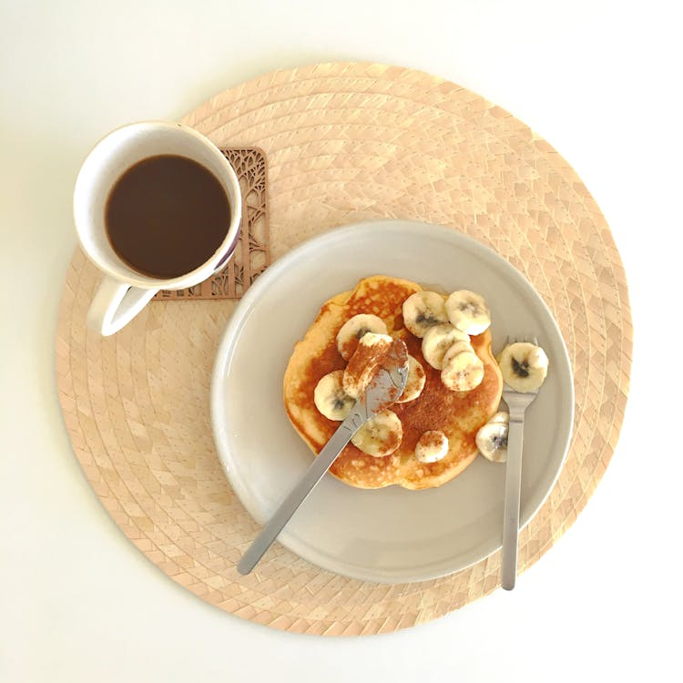

Dicas de alimentação

Inclua alimentos de todos os grupos: Para uma alimentação balanceada, consuma proteínas, carboidratos, gorduras saudáveis, vitaminas e minerais, garantindo energia e nutrição completas.
Mantenha a hidratação: Beber água regularmente é essencial para o bom funcionamento do organismo, ajudando na digestão, absorção de nutrientes e na manutenção da energia ao longo do dia.


Prefira alimentos frescos e naturais: Dê prioridade a frutas, legumes, verduras e grãos integrais, evitando alimentos ultraprocessados que contêm excesso de conservantes, açúcar e sódio.